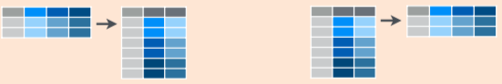

1.4 — Data Wrangling
ECON 4470 • Econometrics
Jordan Izenwasser
Slides Adapated from Ryan Safner, PhD
Contents
Tidying (Pivoting/Reshaping) Data
Data Wrangling
- Most data analysis is taming chaos into order
- Data strewn from multiple sources
- Missing data (“
NA”) - Data not in a readable form

Workflow of a Data Scientist I
- Import raw data from out there in the world
- Tidy it into a form that you can use
- Explore the data (do these 3 repetitively!)
- Transform
- Visualize
- Model
- Communicate results to target audience
Ideally, you’d want to be able to do all of this in one program
Workflow of a Data Scientist II
“Yet far too much handcrafted work - what data scientists call”data wrangling,” “data munging,” and “data janitor work” - is still required. Data scientists, according to interviews and expert estimates, spend from 50 to 80 percent of their time mired in this more mundane labor of collecting and preparing unruly digital data, before it can be explored for useful nuggets.”
Source: New York Times
The tidyverse I
“The tidyverse is an opinionated collection of R packages designed for data science. All packages share an underlying design philosophy, grammar, and data structures.
- Allows you to do all of those things with one (set of) package(s)!
- Learn more at tidyverse.org

The tidyverse II

The tidyverse III
The tidyverse IV
tidyversecontains a lot of packages
[1] "broom" "conflicted" "cli" "dbplyr"
[5] "dplyr" "dtplyr" "forcats" "ggplot2"
[9] "googledrive" "googlesheets4" "haven" "hms"
[13] "httr" "jsonlite" "lubridate" "magrittr"
[17] "modelr" "pillar" "purrr" "ragg"
[21] "readr" "readxl" "reprex" "rlang"
[25] "rstudioapi" "rvest" "stringr" "tibble"
[29] "tidyr" "xml2" "tidyverse" - Only the “core” packages are loaded automatically with
library(tidyverse):ggplot2, dplyr, tidyr, readr, purrr, tibble, stringr, forcats
Your Workflow in the tidyverse:

Tibbles & Piping
Tibbles
A
tibble(ortbl_df) is a friendlierdata.frameFundamental grammar of tidyverse:
- start with a tibble
- run a function on it
- output a new tibble
Loading
tidyverseautomatically converts alldata.framestotibbles
Tibbles: Example I
# A tibble: 53,940 × 10
carat cut color clarity depth table price x y z
<dbl> <ord> <ord> <ord> <dbl> <dbl> <int> <dbl> <dbl> <dbl>
1 0.23 Ideal E SI2 61.5 55 326 3.95 3.98 2.43
2 0.21 Premium E SI1 59.8 61 326 3.89 3.84 2.31
3 0.23 Good E VS1 56.9 65 327 4.05 4.07 2.31
4 0.29 Premium I VS2 62.4 58 334 4.2 4.23 2.63
5 0.31 Good J SI2 63.3 58 335 4.34 4.35 2.75
6 0.24 Very Good J VVS2 62.8 57 336 3.94 3.96 2.48
7 0.24 Very Good I VVS1 62.3 57 336 3.95 3.98 2.47
8 0.26 Very Good H SI1 61.9 55 337 4.07 4.11 2.53
9 0.22 Fair E VS2 65.1 61 337 3.87 3.78 2.49
10 0.23 Very Good H VS1 59.4 61 338 4 4.05 2.39
# ℹ 53,930 more rowsTibbles: Example II
Rows: 53,940
Columns: 10
$ carat <dbl> 0.23, 0.21, 0.23, 0.29, 0.31, 0.24, 0.24, 0.26, 0.22, 0.23, 0.…
$ cut <ord> Ideal, Premium, Good, Premium, Good, Very Good, Very Good, Ver…
$ color <ord> E, E, E, I, J, J, I, H, E, H, J, J, F, J, E, E, I, J, J, J, I,…
$ clarity <ord> SI2, SI1, VS1, VS2, SI2, VVS2, VVS1, SI1, VS2, VS1, SI1, VS1, …
$ depth <dbl> 61.5, 59.8, 56.9, 62.4, 63.3, 62.8, 62.3, 61.9, 65.1, 59.4, 64…
$ table <dbl> 55, 61, 65, 58, 58, 57, 57, 55, 61, 61, 55, 56, 61, 54, 62, 58…
$ price <int> 326, 326, 327, 334, 335, 336, 336, 337, 337, 338, 339, 340, 34…
$ x <dbl> 3.95, 3.89, 4.05, 4.20, 4.34, 3.94, 3.95, 4.07, 3.87, 4.00, 4.…
$ y <dbl> 3.98, 3.84, 4.07, 4.23, 4.35, 3.96, 3.98, 4.11, 3.78, 4.05, 4.…
$ z <dbl> 2.43, 2.31, 2.31, 2.63, 2.75, 2.48, 2.47, 2.53, 2.49, 2.39, 2.…Tibbles: Making a Tibble
- Create a
tibblefrom adata.framewithas_tibble()
# A tibble: 53,940 × 10
carat cut color clarity depth table price x y z
<dbl> <ord> <ord> <ord> <dbl> <dbl> <int> <dbl> <dbl> <dbl>
1 0.23 Ideal E SI2 61.5 55 326 3.95 3.98 2.43
2 0.21 Premium E SI1 59.8 61 326 3.89 3.84 2.31
3 0.23 Good E VS1 56.9 65 327 4.05 4.07 2.31
4 0.29 Premium I VS2 62.4 58 334 4.2 4.23 2.63
5 0.31 Good J SI2 63.3 58 335 4.34 4.35 2.75
6 0.24 Very Good J VVS2 62.8 57 336 3.94 3.96 2.48
7 0.24 Very Good I VVS1 62.3 57 336 3.95 3.98 2.47
8 0.26 Very Good H SI1 61.9 55 337 4.07 4.11 2.53
9 0.22 Fair E VS2 65.1 61 337 3.87 3.78 2.49
10 0.23 Very Good H VS1 59.4 61 338 4 4.05 2.39
# ℹ 53,930 more rowsTibbles: Making a Tibble (from Scratch)
- Create a
tibblefrom scratch withtibble(), works likedata.frame()
Tibbles: Making a Tibble (from Scratch)
- Create a
tibblerow by row withtribble()
Piping Code

The
magrittrpackage allows use of the “pipe” operator (%>%)1%>%“pipes” the output of the left of the pipe into the (1st) argument of the rightRunning a function
fon objectxasf(x)becomesx %>% fin pipeable form- i.e. “take
xand then run functionfon it”
- i.e. “take
Piping Code
- With math functions, typically read from outside \(\leftarrow\) (inside):
Example
\[g(f(x))\]
take x and perform function f() on x and then perform function g() on that result
Why Piping is Useful
Example
Get the average highway miles per gallon of Audi cars
Without pipes:
Importing Data
Importing Data I

Load common spreadsheet files (
.csv,.tsv) with simple commands:read_*(path/to/my_data.*)- where
*can be.csvor.tsv
- where
Can also export your data from R into a common spreadsheet file with:
write_*(my_df, path = path/to/file_name.*)- where
my_dfis the name of yourtibble, andfile_nameis the name of the file you want to save as
- where
Often this is enough, but much more customization possible
Read more on the tidyverse website and the Readr Cheatsheet
Importing Data II


- For other data types from software programs like Excel, STATA, SAS, and SPSS:
readxlhas equivalent commands for Excel data types:read_*("path/to/my/data.*")write_*(my_dataframe, path=path/to/file_name.*)- where
*can be.xlsor.xlsx
havenhas equivalent commands for other data types:read_*("path/to/my_data.dta")for STATA.dtafileswrite_*(my_dataframe, path=path/to/file_name.*)- where
*can be.dta(STATA),.sav(SPSS),.sas7bdat(SAS)
Importing Data: Common Issues
“where the hell is my data file”??
Recall
Rlooks for files toread_*()in the default working directory1You can tell
Rwhere this data is by making thepatha part of the file’s name when importing- Use
..to “move up one folder” - Use
/to “enter a folder”
- Use
Aside: File Directories
- You can tell
Rwhere this data is by making thepatha part of the file’s name when importing- Use
..to “move up one folder” - Use
/to “enter a folder”
- Use
- Either use an absolute path on your computer:
- Or use a relative path from R’s working directory
Aside: File Directories
- You can also change your working directory to make files easier to load in
- For example, you can load all your data for a project into a folder called ‘MyProj’
- If you are working with others, it may be useful to assign your directories to a variable
Common Import Issues II
Suggestion to make your data import easier: Download and move files to R’s working directory
- This means it’s not a best practice to constantly be changing your working directory
Your computer and working directory are different from mine (and others)
This is not a reproducible workflow!
We’ll fix this soon with
R Projects- The working directory is set to the Project Folder by default
- Same for everyone on any computer!
Data Import Cheat Sheet
Tidying (Pivoting/Reshaping) Data
Tidy Data
- “tidy” data are (an opinionated view of) data where
- Each variable is in a column
- Each observation is a row
- Each observational unit forms a table (or “every value is its own cell.”)
- This is the namesake of the
tidyverse: all associated packages and functions require tidy data- Spend less time fighting your tools and more time on analysis!

Tidy vs. Untidy Data
- “Tidy” data \(\neq\) clean, perfect data
“Happy families are all alike; every unhappy family is unhappy in its own way.” - Leo Tolstoy
“Tidy datasets are all alike, but every messy dataset is messy in its own way.” - Hadley Wickham
Examples of Untidy Data

Examples of Untidy Data

Examples of Untidy Data

Reshaping/Pivoting Data

tidyrpackage helps reshape data into more usable formatMost common use: reshaping data between “long” and “wide”

Reshaping

Source: Garrick Aden-Buie’s tidyexplain
Reshaping from Wide to Long: pivot_longer() I
- Common source of “un-tidy” data: Column headers are values, not variable names! 😨
- Column names are values of a
yearvariable! (e.g.2000,2010) - Each row actually represents two observations (one in 2000 and one in 2010)!
- Column names are values of a
Reshaping from Wide to Long: pivot_longer() II
- We need to
pivot_longer()these columns into a new pair of variables to make a longer dataframe- set of columns represent values of one variable (
year), not variables themselves! (2000and2010) names_to: name of variable to create whose values form the column names (the “names”2000and2010are values ofyear)values_to: name of the variable to create whose values are spread over the cells (we’ll call it number ofcasesfor each country in each year)
- set of columns represent values of one variable (
Reshaping from Wide to Long: pivot_longer() III
pivot_longer()a wide data frame into a long data frame
ex_wide %>%
pivot_longer(c("2000","2010"), # select columns
names_to = "year", # variable for column names
values_to = "cases") # values# A tibble: 6 × 3
Country year cases
<chr> <chr> <dbl>
1 United States 2000 140
2 United States 2010 180
3 Canada 2000 102
4 Canada 2010 98
5 China 2000 111
6 China 2010 123Reshaping from Long to Wide: pivot_wider() I
# A tibble: 12 × 4
country year type count
<chr> <dbl> <chr> <dbl>
1 United States 2000 cases 140
2 United States 2000 population 300
3 United States 2010 cases 180
4 United States 2010 population 310
5 Canada 2000 cases 102
6 Canada 2000 population 110
7 Canada 2010 cases 98
8 Canada 2010 population 121
9 China 2000 cases 111
10 China 2000 population 1201
11 China 2010 cases 123
12 China 2010 population 1241- Another common source of “un-tidy” data: observations are scattered across multiple rows! 😨
- Each country-year has two rows per observation, one for
Casesand one forPopulation(categorized bytypeof variable)
- Each country-year has two rows per observation, one for
Reshaping from Wide to Long: pivot_wider() II
# A tibble: 12 × 4
country year type count
<chr> <dbl> <chr> <dbl>
1 United States 2000 cases 140
2 United States 2000 population 300
3 United States 2010 cases 180
4 United States 2010 population 310
5 Canada 2000 cases 102
6 Canada 2000 population 110
7 Canada 2010 cases 98
8 Canada 2010 population 121
9 China 2000 cases 111
10 China 2000 population 1201
11 China 2010 cases 123
12 China 2010 population 1241- We need to
pivot_wider()these columns into a new pair of variablesnames_from: column that contains variable names (here, thetype)values_from: column that contains values from multiple variables (here, thecount)
Reshaping from Wide to Long: pivot_wider() III
pivot_wider()a long data frame into a wide data frame
# A tibble: 12 × 4
country year type count
<chr> <dbl> <chr> <dbl>
1 United States 2000 cases 140
2 United States 2000 population 300
3 United States 2010 cases 180
4 United States 2010 population 310
5 Canada 2000 cases 102
6 Canada 2000 population 110
7 Canada 2010 cases 98
8 Canada 2010 population 121
9 China 2000 cases 111
10 China 2000 population 1201
11 China 2010 cases 123
12 China 2010 population 1241ex_long %>%
pivot_wider(names_from = "type", # column with names of vars
values_from = "count") # column with values of vars# A tibble: 6 × 4
country year cases population
<chr> <dbl> <dbl> <dbl>
1 United States 2000 140 300
2 United States 2010 180 310
3 Canada 2000 102 110
4 Canada 2010 98 121
5 China 2000 111 1201
6 China 2010 123 1241Data Tidying Cheat Sheet
Joining Datasets
Joins in R
Often in econometrics we have multiple sources of data we need to join (i.e want to join crime data by county with policing data by county)
We can use the
join_*family of functions fromdplyr- Requires two data frames,
xandy - Can identify variable(s) we want to join on using
by = "var_name" - Joining variables must have same name in both data frames
- If we don’t specify
by=,dplyrwill try to find a var with the same name to join on
- Requires two data frames,

Joins Example
# A tibble: 6 × 4
country year cases population
<chr> <dbl> <dbl> <dbl>
1 United States 2000 140 300
2 United States 2010 180 310
3 Canada 2000 102 110
4 Canada 2010 98 121
5 China 2000 111 1201
6 China 2010 123 1241# A tibble: 6 × 3
country year gdp
<chr> <dbl> <dbl>
1 United States 2000 10.2
2 United States 2010 15.0
3 Canada 2000 0.744
4 Canada 2010 1.62
5 China 2000 1.21
6 China 2010 6.09 # A tibble: 6 × 5
country year cases population gdp
<chr> <dbl> <dbl> <dbl> <dbl>
1 United States 2000 140 300 10.2
2 United States 2010 180 310 15.0
3 Canada 2000 102 110 0.744
4 Canada 2010 98 121 1.62
5 China 2000 111 1201 1.21
6 China 2010 123 1241 6.09 # A tibble: 6 × 5
country year cases population gdp
<chr> <dbl> <dbl> <dbl> <dbl>
1 United States 2000 140 300 10.2
2 United States 2010 180 310 15.0
3 Canada 2000 102 110 0.744
4 Canada 2010 98 121 1.62
5 China 2000 111 1201 1.21
6 China 2010 123 1241 6.09 Wrangling Data
dplyr I

dplyruses more efficient & intuitive commands to manipulate tibblesBase Rgrammar passively runs functions on nouns:function(object)dplyrgrammar actively uses verbs:verb(df, conditions)1
dplyr II
- Great features:
- Allows use of
%>%pipe operator - Input and output is always a
tibble - Shows the output from a manipulation, but does not save/overwrite as an object unless explicitly assigned to an object
- Several packages provide backends to SQL (
dbplyr), Apache Spark (sparklyr)
- Allows use of
dplyr Verbs
- Common
dplyrverbs
| Verb | Does |
|---|---|
filter() |
Keep only selected observations |
select() |
Keep only selected variables |
arrange() |
Reorder rows (e.g. in numerical order) |
mutate() |
Create new variables |
summarize() |
Collapse data into summary statistics |
group_by() |
Perform any of the above functions by groups/categories |
arrange(): Reorder observations
arrange()
arrangereorders observations (rows) in a logical order- e.g. alphabetical, numeric, small to large
# A tibble: 1,704 × 6
country continent year lifeExp pop gdpPercap
<fct> <fct> <int> <dbl> <int> <dbl>
1 Sao Tome and Principe Africa 1952 46.5 60011 880.
2 Sao Tome and Principe Africa 1957 48.9 61325 861.
3 Djibouti Africa 1952 34.8 63149 2670.
4 Sao Tome and Principe Africa 1962 51.9 65345 1072.
5 Sao Tome and Principe Africa 1967 54.4 70787 1385.
6 Djibouti Africa 1957 37.3 71851 2865.
7 Sao Tome and Principe Africa 1972 56.5 76595 1533.
8 Sao Tome and Principe Africa 1977 58.6 86796 1738.
9 Djibouti Africa 1962 39.7 89898 3021.
10 Sao Tome and Principe Africa 1982 60.4 98593 1890.
# ℹ 1,694 more rowsarrange(): Ties
- Break ties in the value of one variable with the values of additional variables
# A tibble: 1,704 × 6
country continent year lifeExp pop gdpPercap
<fct> <fct> <int> <dbl> <int> <dbl>
1 Sao Tome and Principe Africa 1952 46.5 60011 880.
2 Djibouti Africa 1952 34.8 63149 2670.
3 Bahrain Asia 1952 50.9 120447 9867.
4 Iceland Europe 1952 72.5 147962 7268.
5 Comoros Africa 1952 40.7 153936 1103.
6 Kuwait Asia 1952 55.6 160000 108382.
7 Equatorial Guinea Africa 1952 34.5 216964 376.
8 Reunion Africa 1952 52.7 257700 2719.
9 Gambia Africa 1952 30 284320 485.
10 Swaziland Africa 1952 41.4 290243 1148.
# ℹ 1,694 more rowsarrange(): Descending Order
- Wrap
desc()around a variable re-order in the opposite direction
select() Variables

select()
selectkeeps only selected variables (columns)- Don’t need quotes around column names
# A tibble: 1,704 × 3
country year pop
<fct> <int> <int>
1 Afghanistan 1952 8425333
2 Afghanistan 1957 9240934
3 Afghanistan 1962 10267083
4 Afghanistan 1967 11537966
5 Afghanistan 1972 13079460
6 Afghanistan 1977 14880372
7 Afghanistan 1982 12881816
8 Afghanistan 1987 13867957
9 Afghanistan 1992 16317921
10 Afghanistan 1997 22227415
# ℹ 1,694 more rowsselect() except
select“all except” by negating a variable with-
# A tibble: 1,704 × 5
country continent year lifeExp pop
<fct> <fct> <int> <dbl> <int>
1 Afghanistan Asia 1952 28.8 8425333
2 Afghanistan Asia 1957 30.3 9240934
3 Afghanistan Asia 1962 32.0 10267083
4 Afghanistan Asia 1967 34.0 11537966
5 Afghanistan Asia 1972 36.1 13079460
6 Afghanistan Asia 1977 38.4 14880372
7 Afghanistan Asia 1982 39.9 12881816
8 Afghanistan Asia 1987 40.8 13867957
9 Afghanistan Asia 1992 41.7 16317921
10 Afghanistan Asia 1997 41.8 22227415
# ℹ 1,694 more rowsselect(): Reordering columns
selectreorders the columns in the order you provide- sometimes useful to keep all variables, and drag one or a few to the front, add
everything()at the end
- sometimes useful to keep all variables, and drag one or a few to the front, add
# A tibble: 1,704 × 6
pop country continent year lifeExp gdpPercap
<int> <fct> <fct> <int> <dbl> <dbl>
1 8425333 Afghanistan Asia 1952 28.8 779.
2 9240934 Afghanistan Asia 1957 30.3 821.
3 10267083 Afghanistan Asia 1962 32.0 853.
4 11537966 Afghanistan Asia 1967 34.0 836.
5 13079460 Afghanistan Asia 1972 36.1 740.
6 14880372 Afghanistan Asia 1977 38.4 786.
7 12881816 Afghanistan Asia 1982 39.9 978.
8 13867957 Afghanistan Asia 1987 40.8 852.
9 16317921 Afghanistan Asia 1992 41.7 649.
10 22227415 Afghanistan Asia 1997 41.8 635.
# ℹ 1,694 more rowsselect() Helper Functions
selecthas a lot of helper functions, useful for when you have hundreds of variables- see
?select()for a list
- see
# A tibble: 1,704 × 2
country continent
<fct> <fct>
1 Afghanistan Asia
2 Afghanistan Asia
3 Afghanistan Asia
4 Afghanistan Asia
5 Afghanistan Asia
6 Afghanistan Asia
7 Afghanistan Asia
8 Afghanistan Asia
9 Afghanistan Asia
10 Afghanistan Asia
# ℹ 1,694 more rowsselect() Helper Functions
selecthas a lot of helper functions, useful for when you have hundreds of variables- see
?select()for a list
- see
# A tibble: 1,704 × 2
country gdpPercap
<fct> <dbl>
1 Afghanistan 779.
2 Afghanistan 821.
3 Afghanistan 853.
4 Afghanistan 836.
5 Afghanistan 740.
6 Afghanistan 786.
7 Afghanistan 978.
8 Afghanistan 852.
9 Afghanistan 649.
10 Afghanistan 635.
# ℹ 1,694 more rowsrename() Variables
renamechanges the name of a variable (column)- Format:
new_name = old_name
- Format:
# rename gdpPercap to GDP and lifeExp to population
gapminder %>%
rename(GDP = gdpPercap,
LE = lifeExp)# A tibble: 1,704 × 6
country continent year LE pop GDP
<fct> <fct> <int> <dbl> <int> <dbl>
1 Afghanistan Asia 1952 28.8 8425333 779.
2 Afghanistan Asia 1957 30.3 9240934 821.
3 Afghanistan Asia 1962 32.0 10267083 853.
4 Afghanistan Asia 1967 34.0 11537966 836.
5 Afghanistan Asia 1972 36.1 13079460 740.
6 Afghanistan Asia 1977 38.4 14880372 786.
7 Afghanistan Asia 1982 39.9 12881816 978.
8 Afghanistan Asia 1987 40.8 13867957 852.
9 Afghanistan Asia 1992 41.7 16317921 649.
10 Afghanistan Asia 1997 41.8 22227415 635.
# ℹ 1,694 more rowsfilter() Select Rows by Condition

filter()
filterkeeps only selected observations (rows)
# A tibble: 624 × 6
country continent year lifeExp pop gdpPercap
<fct> <fct> <int> <dbl> <int> <dbl>
1 Algeria Africa 1952 43.1 9279525 2449.
2 Algeria Africa 1957 45.7 10270856 3014.
3 Algeria Africa 1962 48.3 11000948 2551.
4 Algeria Africa 1967 51.4 12760499 3247.
5 Algeria Africa 1972 54.5 14760787 4183.
6 Algeria Africa 1977 58.0 17152804 4910.
7 Algeria Africa 1982 61.4 20033753 5745.
8 Algeria Africa 1987 65.8 23254956 5681.
9 Algeria Africa 1992 67.7 26298373 5023.
10 Algeria Africa 1997 69.2 29072015 4797.
# ℹ 614 more rowsConditionals in R
- In many data wrangling contexts, you will want to select data conditionally
- To a computer: observations for which a set of logical conditions are
TRUE1
- To a computer: observations for which a set of logical conditions are
> |
greater than | < |
less than |
>= |
greater than or equal to | <= |
less than or equal to |
==2 |
is equal to | != |
is not equal to |
& |
and | \(\vert\) | or |
%in% |
is member of | %notin% |
is not a member of |
filter() with Conditionals I
- Can chain multiple conditions with a
,
# look only at African observations in 1997
gapminder %>%
filter(continent == "Africa",
year == 1997)# A tibble: 52 × 6
country continent year lifeExp pop gdpPercap
<fct> <fct> <int> <dbl> <int> <dbl>
1 Algeria Africa 1997 69.2 29072015 4797.
2 Angola Africa 1997 41.0 9875024 2277.
3 Benin Africa 1997 54.8 6066080 1233.
4 Botswana Africa 1997 52.6 1536536 8647.
5 Burkina Faso Africa 1997 50.3 10352843 946.
6 Burundi Africa 1997 45.3 6121610 463.
7 Cameroon Africa 1997 52.2 14195809 1694.
8 Central African Republic Africa 1997 46.1 3696513 741.
9 Chad Africa 1997 51.6 7562011 1005.
10 Comoros Africa 1997 60.7 527982 1174.
# ℹ 42 more rowsfilter() with Conditionals II
# look only at African observations OR observations in 1997
gapminder %>%
filter(continent == "Africa" |
year == 1997)# A tibble: 714 × 6
country continent year lifeExp pop gdpPercap
<fct> <fct> <int> <dbl> <int> <dbl>
1 Afghanistan Asia 1997 41.8 22227415 635.
2 Albania Europe 1997 73.0 3428038 3193.
3 Algeria Africa 1952 43.1 9279525 2449.
4 Algeria Africa 1957 45.7 10270856 3014.
5 Algeria Africa 1962 48.3 11000948 2551.
6 Algeria Africa 1967 51.4 12760499 3247.
7 Algeria Africa 1972 54.5 14760787 4183.
8 Algeria Africa 1977 58.0 17152804 4910.
9 Algeria Africa 1982 61.4 20033753 5745.
10 Algeria Africa 1987 65.8 23254956 5681.
# ℹ 704 more rowsfilter() with Conditionals III
# look only at U.S. and U.K. observations in 2002
gapminder %>%
filter(country %in%
c("United States",
"United Kingdom"),
year == 2002)# A tibble: 2 × 6
country continent year lifeExp pop gdpPercap
<fct> <fct> <int> <dbl> <int> <dbl>
1 United Kingdom Europe 2002 78.5 59912431 29479.
2 United States Americas 2002 77.3 287675526 39097.mutate(): Create New Variables

mutate()
mutatecreates a new variable (column)- always adds a new column at the end
- general formula:
new_variable_name = operation
- Three major types of mutates:
- Create a variable that is a specific value (often categorical)
- Change an existing variable (often rescaling)
- Create a variable based on other variables
mutate(): Setting a Specific Value
# create variable called "europe" if country is in Europe
mutate(gapminder,
europe = case_when(continent == "Europe" ~ "In Europe",
continent != "Europe" ~ "Not in Europe"))# A tibble: 1,704 × 7
country continent year lifeExp pop gdpPercap europe
<fct> <fct> <int> <dbl> <int> <dbl> <chr>
1 Afghanistan Asia 1952 28.8 8425333 779. Not in Europe
2 Afghanistan Asia 1957 30.3 9240934 821. Not in Europe
3 Afghanistan Asia 1962 32.0 10267083 853. Not in Europe
4 Afghanistan Asia 1967 34.0 11537966 836. Not in Europe
5 Afghanistan Asia 1972 36.1 13079460 740. Not in Europe
6 Afghanistan Asia 1977 38.4 14880372 786. Not in Europe
7 Afghanistan Asia 1982 39.9 12881816 978. Not in Europe
8 Afghanistan Asia 1987 40.8 13867957 852. Not in Europe
9 Afghanistan Asia 1992 41.7 16317921 649. Not in Europe
10 Afghanistan Asia 1997 41.8 22227415 635. Not in Europe
# ℹ 1,694 more rowsmutate(): Changing a Variable’s Scale
# A tibble: 1,704 × 7
country continent year lifeExp pop gdpPercap pop_mil
<fct> <fct> <int> <dbl> <int> <dbl> <dbl>
1 Afghanistan Asia 1952 28.8 8425333 779. 8.43
2 Afghanistan Asia 1957 30.3 9240934 821. 9.24
3 Afghanistan Asia 1962 32.0 10267083 853. 10.3
4 Afghanistan Asia 1967 34.0 11537966 836. 11.5
5 Afghanistan Asia 1972 36.1 13079460 740. 13.1
6 Afghanistan Asia 1977 38.4 14880372 786. 14.9
7 Afghanistan Asia 1982 39.9 12881816 978. 12.9
8 Afghanistan Asia 1987 40.8 13867957 852. 13.9
9 Afghanistan Asia 1992 41.7 16317921 649. 16.3
10 Afghanistan Asia 1997 41.8 22227415 635. 22.2
# ℹ 1,694 more rowsmutate(): Variable Based on Other Variables
# create GDP variable from gdpPercap and pop, in billions
gapminder %>%
mutate(GDP = ((gdpPercap * pop) / 1000000000))# A tibble: 1,704 × 7
country continent year lifeExp pop gdpPercap GDP
<fct> <fct> <int> <dbl> <int> <dbl> <dbl>
1 Afghanistan Asia 1952 28.8 8425333 779. 6.57
2 Afghanistan Asia 1957 30.3 9240934 821. 7.59
3 Afghanistan Asia 1962 32.0 10267083 853. 8.76
4 Afghanistan Asia 1967 34.0 11537966 836. 9.65
5 Afghanistan Asia 1972 36.1 13079460 740. 9.68
6 Afghanistan Asia 1977 38.4 14880372 786. 11.7
7 Afghanistan Asia 1982 39.9 12881816 978. 12.6
8 Afghanistan Asia 1987 40.8 13867957 852. 11.8
9 Afghanistan Asia 1992 41.7 16317921 649. 10.6
10 Afghanistan Asia 1997 41.8 22227415 635. 14.1
# ℹ 1,694 more rowsmutate(): Change Class of Variable
- Change
classof a variable insidemutate()withas.*()
# A tibble: 1,704 × 6
country continent year lifeExp pop gdpPercap
<fct> <fct> <fct> <dbl> <int> <dbl>
1 Afghanistan Asia 1952 28.8 8425333 779.
2 Afghanistan Asia 1957 30.3 9240934 821.
3 Afghanistan Asia 1962 32.0 10267083 853.
4 Afghanistan Asia 1967 34.0 11537966 836.
5 Afghanistan Asia 1972 36.1 13079460 740.
6 Afghanistan Asia 1977 38.4 14880372 786.
7 Afghanistan Asia 1982 39.9 12881816 978.
8 Afghanistan Asia 1987 40.8 13867957 852.
9 Afghanistan Asia 1992 41.7 16317921 649.
10 Afghanistan Asia 1997 41.8 22227415 635.
# ℹ 1,694 more rowsmutate(): Create Multiple Variables
- Can create multiple new variables with commas:
# A tibble: 1,704 × 8
country continent year lifeExp pop gdpPercap GDP pop_millions
<fct> <fct> <int> <dbl> <int> <dbl> <dbl> <dbl>
1 Afghanistan Asia 1952 28.8 8425333 779. 6.57e 9 8.43
2 Afghanistan Asia 1957 30.3 9240934 821. 7.59e 9 9.24
3 Afghanistan Asia 1962 32.0 10267083 853. 8.76e 9 10.3
4 Afghanistan Asia 1967 34.0 11537966 836. 9.65e 9 11.5
5 Afghanistan Asia 1972 36.1 13079460 740. 9.68e 9 13.1
6 Afghanistan Asia 1977 38.4 14880372 786. 1.17e10 14.9
7 Afghanistan Asia 1982 39.9 12881816 978. 1.26e10 12.9
8 Afghanistan Asia 1987 40.8 13867957 852. 1.18e10 13.9
9 Afghanistan Asia 1992 41.7 16317921 649. 1.06e10 16.3
10 Afghanistan Asia 1997 41.8 22227415 635. 1.41e10 22.2
# ℹ 1,694 more rowstransmute(): Keep Only New Variables
transmutekeeps only newly created variables (itselect()s only the newmutate()d variables)
# A tibble: 1,704 × 2
GDP pop_millions
<dbl> <dbl>
1 6567086330. 8.43
2 7585448670. 9.24
3 8758855797. 10.3
4 9648014150. 11.5
5 9678553274. 13.1
6 11697659231. 14.9
7 12598563401. 12.9
8 11820990309. 13.9
9 10595901589. 16.3
10 14121995875. 22.2
# ℹ 1,694 more rowsmutate(): Conditionals
- Boolean, logical, and conditionals all work well in
mutate():
gapminder %>%
select(country, year, lifeExp) %>%
mutate(long_life_1 = lifeExp > 70,
long_life_2 = case_when(lifeExp > 70 ~ "Long",
lifeExp <= 70 ~ "Short"))# A tibble: 1,704 × 5
country year lifeExp long_life_1 long_life_2
<fct> <int> <dbl> <lgl> <chr>
1 Afghanistan 1952 28.8 FALSE Short
2 Afghanistan 1957 30.3 FALSE Short
3 Afghanistan 1962 32.0 FALSE Short
4 Afghanistan 1967 34.0 FALSE Short
5 Afghanistan 1972 36.1 FALSE Short
6 Afghanistan 1977 38.4 FALSE Short
7 Afghanistan 1982 39.9 FALSE Short
8 Afghanistan 1987 40.8 FALSE Short
9 Afghanistan 1992 41.7 FALSE Short
10 Afghanistan 1997 41.8 FALSE Short
# ℹ 1,694 more rowsmutate() is Order Aware
mutate()is order-aware, so you can chain multiple mutates that depend on previous mutates
gapminder %>%
select(country, year, lifeExp) %>%
mutate(dog_years = lifeExp * 7,
comment = paste("Life expectancy in", country, "is", dog_years, "in dog years.", sep = " "))# A tibble: 1,704 × 5
country year lifeExp dog_years comment
<fct> <int> <dbl> <dbl> <chr>
1 Afghanistan 1952 28.8 202. Life expectancy in Afghanistan is 201.60…
2 Afghanistan 1957 30.3 212. Life expectancy in Afghanistan is 212.32…
3 Afghanistan 1962 32.0 224. Life expectancy in Afghanistan is 223.97…
4 Afghanistan 1967 34.0 238. Life expectancy in Afghanistan is 238.14…
5 Afghanistan 1972 36.1 253. Life expectancy in Afghanistan is 252.61…
6 Afghanistan 1977 38.4 269. Life expectancy in Afghanistan is 269.06…
7 Afghanistan 1982 39.9 279. Life expectancy in Afghanistan is 278.97…
8 Afghanistan 1987 40.8 286. Life expectancy in Afghanistan is 285.75…
9 Afghanistan 1992 41.7 292. Life expectancy in Afghanistan is 291.71…
10 Afghanistan 1997 41.8 292. Life expectancy in Afghanistan is 292.34…
# ℹ 1,694 more rowsmutate(): Scoped-functions I
- “Scoped” variants of
mutatethat work on a subset of variables:mutate_all()affects every variablemutate_at()affects named or selected variablesmutate_if()affects variables that meet a criteria
# round all observations of numeric variables to 2 digits
gapminder %>%
mutate_if(is.numeric, round, digits = 2)# A tibble: 1,704 × 6
country continent year lifeExp pop gdpPercap
<fct> <fct> <dbl> <dbl> <dbl> <dbl>
1 Afghanistan Asia 1952 28.8 8425333 779.
2 Afghanistan Asia 1957 30.3 9240934 821.
3 Afghanistan Asia 1962 32 10267083 853.
4 Afghanistan Asia 1967 34.0 11537966 836.
5 Afghanistan Asia 1972 36.1 13079460 740.
6 Afghanistan Asia 1977 38.4 14880372 786.
7 Afghanistan Asia 1982 39.8 12881816 978.
8 Afghanistan Asia 1987 40.8 13867957 852.
9 Afghanistan Asia 1992 41.7 16317921 649.
10 Afghanistan Asia 1997 41.8 22227415 635.
# ℹ 1,694 more rowsmutate(): Scoped-functions II
- “Scoped” variants of
mutatethat work on a subset of variables:mutate_all()affects every variablemutate_at()affects named or selected variablesmutate_if()affects variables that meet a criteria
# A tibble: 1,704 × 6
country continent year lifeExp pop gdpPercap
<chr> <chr> <int> <dbl> <int> <dbl>
1 AFGHANISTAN ASIA 1952 28.8 8425333 779.
2 AFGHANISTAN ASIA 1957 30.3 9240934 821.
3 AFGHANISTAN ASIA 1962 32.0 10267083 853.
4 AFGHANISTAN ASIA 1967 34.0 11537966 836.
5 AFGHANISTAN ASIA 1972 36.1 13079460 740.
6 AFGHANISTAN ASIA 1977 38.4 14880372 786.
7 AFGHANISTAN ASIA 1982 39.9 12881816 978.
8 AFGHANISTAN ASIA 1987 40.8 13867957 852.
9 AFGHANISTAN ASIA 1992 41.7 16317921 649.
10 AFGHANISTAN ASIA 1997 41.8 22227415 635.
# ℹ 1,694 more rowsA Reminder on Viewing, Saving, & Overwriting Objects I
dplyrfunctions never modify their inputs (i.e. never overwrite the originaltibble)- If you want to save a result, use
<-to assign it to a newtibble - If assigned, you will not see the output until you call up the new
tibbleby name
# A tibble: 624 × 6
country continent year lifeExp pop gdpPercap
<fct> <fct> <int> <dbl> <int> <dbl>
1 Algeria Africa 1952 43.1 9279525 2449.
2 Algeria Africa 1957 45.7 10270856 3014.
3 Algeria Africa 1962 48.3 11000948 2551.
4 Algeria Africa 1967 51.4 12760499 3247.
5 Algeria Africa 1972 54.5 14760787 4183.
6 Algeria Africa 1977 58.0 17152804 4910.
7 Algeria Africa 1982 61.4 20033753 5745.
8 Algeria Africa 1987 65.8 23254956 5681.
9 Algeria Africa 1992 67.7 26298373 5023.
10 Algeria Africa 1997 69.2 29072015 4797.
# ℹ 614 more rows# A tibble: 624 × 6
country continent year lifeExp pop gdpPercap
<fct> <fct> <int> <dbl> <int> <dbl>
1 Algeria Africa 1952 43.1 9279525 2449.
2 Algeria Africa 1957 45.7 10270856 3014.
3 Algeria Africa 1962 48.3 11000948 2551.
4 Algeria Africa 1967 51.4 12760499 3247.
5 Algeria Africa 1972 54.5 14760787 4183.
6 Algeria Africa 1977 58.0 17152804 4910.
7 Algeria Africa 1982 61.4 20033753 5745.
8 Algeria Africa 1987 65.8 23254956 5681.
9 Algeria Africa 1992 67.7 26298373 5023.
10 Algeria Africa 1997 69.2 29072015 4797.
# ℹ 614 more rowsA Reminder on Viewing, Saving, & Overwriting Objects II
- Neat trick:
# Save and view at same time by wrapping whole command with ()
(africa <- gapminder %>%
filter(continent == "Africa"))# A tibble: 624 × 6
country continent year lifeExp pop gdpPercap
<fct> <fct> <int> <dbl> <int> <dbl>
1 Algeria Africa 1952 43.1 9279525 2449.
2 Algeria Africa 1957 45.7 10270856 3014.
3 Algeria Africa 1962 48.3 11000948 2551.
4 Algeria Africa 1967 51.4 12760499 3247.
5 Algeria Africa 1972 54.5 14760787 4183.
6 Algeria Africa 1977 58.0 17152804 4910.
7 Algeria Africa 1982 61.4 20033753 5745.
8 Algeria Africa 1987 65.8 23254956 5681.
9 Algeria Africa 1992 67.7 26298373 5023.
10 Algeria Africa 1997 69.2 29072015 4797.
# ℹ 614 more rowssummarize(): Create Statistics

summarize()
summarize1 outputs a tibble of desired summary statistics- can name the statistic variable as if you were
mutate()-ing a new variable
- can name the statistic variable as if you were
summarize(): Useful commands
- Useful
summarize()commands:
| Command | Does |
|---|---|
n() |
Number of observations |
n_distinct() |
Number of unique observations |
sum() |
Sum all observations of a variable |
mean() |
Average of all observations of a variable |
median() |
50th percentile of all observations of a variable |
sd() |
Standard deviation of all observations of a variable |
Most commands require you to put a variable name inside the command’s argument parentheses. n() and n_distinct() require empty parentheses!
summarize(): Useful commands II
- Useful
summarize()commands:
| Command | Does |
|---|---|
min() |
Minimum value of a variable |
max() |
Maximum value of a variable |
quantile(., 0.25) |
Specified percentile (e.g. 25th percentile) of a variable |
first() |
First value of a variable |
last() |
Last value of a variable |
nth(., 2) |
Specified position of a variable (example 2nd) |
The . in quantile() and nth() are where you would put your variable name.
summarize() counts
- Counts of a categorical variable are useful, and can be done a few different ways:
# summarize with n() gives size of current group, has no arguments
gapminder %>%
summarize(amount = n()) # I've called it "amount"# A tibble: 1 × 1
amount
<int>
1 1704# count() is a dedicated command, counts observations by specified variable
gapminder %>%
count(year) # counts how many observations per year# A tibble: 12 × 2
year n
<int> <int>
1 1952 142
2 1957 142
3 1962 142
4 1967 142
5 1972 142
6 1977 142
7 1982 142
8 1987 142
9 1992 142
10 1997 142
11 2002 142
12 2007 142summarize() Conditionally
- Can do counts and proportions by conditions
- How many observations fit specified conditions (e.g.
TRUE) - Numeric objects:
TRUE=1andFALSE=0sum(x)becomes the number ofTRUEs inxmean(x)becomes the proportion
- How many observations fit specified conditions (e.g.
summarize() Multiple Variables
- Can
summarize()multiple variables at once, separate by commas
summarize() Multiple Statistics
- Can
summarize()multiple statistics of a variable at once, separate by commas
summarize() Scoped Versions
- “Scoped” versions of
summarize()that work on a subset of variablessummarize_all(): affects every variablesummarize_at(): affects named or selected variablessummarize_if(): affects variables that meet a criteria
group_by(): Grouped summaries
group_by() + summarize() I
- If we have
factorvariables grouping a variable into categories, we can rundplyrverbs by group- Particularly useful for
summarize()
- Particularly useful for
- First define the group with
group_by()
# get average life expectancy and gdp by continent
gapminder %>%
group_by(continent) %>%
summarize(avg_life = mean(lifeExp),
avg_GDP = mean(gdpPercap))# A tibble: 5 × 3
continent avg_life avg_GDP
<fct> <dbl> <dbl>
1 Africa 48.9 2194.
2 Americas 64.7 7136.
3 Asia 60.1 7902.
4 Europe 71.9 14469.
5 Oceania 74.3 18622.group_by() + summarize() II
# track changes in average life expectancy and gdp over time
gapminder %>%
group_by(year) %>%
summarize(mean_life = mean(lifeExp),
mean_GDP = mean(gdpPercap))# A tibble: 12 × 3
year mean_life mean_GDP
<int> <dbl> <dbl>
1 1952 49.1 3725.
2 1957 51.5 4299.
3 1962 53.6 4726.
4 1967 55.7 5484.
5 1972 57.6 6770.
6 1977 59.6 7313.
7 1982 61.5 7519.
8 1987 63.2 7901.
9 1992 64.2 8159.
10 1997 65.0 9090.
11 2002 65.7 9918.
12 2007 67.0 11680.group_by() + summarize() III
- Can group observations by multiple variables (in proper order)
# track changes in average life expectancy and gdp over time
gapminder %>%
group_by(continent, year) %>%
summarize(mean_life = mean(lifeExp),
mean_GDP = mean(gdpPercap))# A tibble: 60 × 4
# Groups: continent [5]
continent year mean_life mean_GDP
<fct> <int> <dbl> <dbl>
1 Africa 1952 39.1 1253.
2 Africa 1957 41.3 1385.
3 Africa 1962 43.3 1598.
4 Africa 1967 45.3 2050.
5 Africa 1972 47.5 2340.
6 Africa 1977 49.6 2586.
7 Africa 1982 51.6 2482.
8 Africa 1987 53.3 2283.
9 Africa 1992 53.6 2282.
10 Africa 1997 53.6 2379.
# ℹ 50 more rowsPiping Across Packages
tidyverseuses same grammar and design philosophy
gapminder %>%
group_by(continent, year) %>%
summarize(mean_life = mean(lifeExp),
mean_GDP = mean(gdpPercap)) %>%
# now pipe this tibble in as data for ggplot!
ggplot(data = ., # . pipes the above in (to data layer)
aes(x = year,
y = mean_life,
color = continent))+
geom_path(size = 1)+
labs(x = "Year",
y = "Average Life Expectancy (Years)",
color = "Continent",
title = "Average Life Expectancy Over Time")+
theme_classic(base_family = "Fira Sans Condensed",
base_size = 20)dplyr: Other Useful Commands
tally(): counts for categories
tallyprovides counts, best used withgroup_byforfactors
slice(): Filter row by position
slice()subsets observations by position instead offiltering by values
# A tibble: 3 × 6
country continent year lifeExp pop gdpPercap
<fct> <fct> <int> <dbl> <int> <dbl>
1 Albania Europe 1962 64.8 1728137 2313.
2 Albania Europe 1967 66.2 1984060 2760.
3 Albania Europe 1972 67.7 2263554 3313.# A tibble: 3 × 6
country continent year lifeExp pop gdpPercap
<fct> <fct> <int> <dbl> <int> <dbl>
1 Afghanistan Asia 1957 30.3 9240934 821.
2 Afghanistan Asia 1962 32.0 10267083 853.
3 Bosnia and Herzegovina Europe 1977 69.9 4086000 3528.pull(): Extract columns
pull()extracts a column from atibble(just like$for adata.frame)
# Get all U.S. life expectancy observations
gapminder %>%
filter(country == "United States") %>%
pull(lifeExp) [1] 68.440 69.490 70.210 70.760 71.340 73.380 74.650 75.020 76.090 76.810
[11] 77.310 78.242# Get U.S. life expectancy in 2007
gapminder %>%
filter(country == "United States" & year == 2007) %>%
pull(lifeExp)[1] 78.242- Good for extracting & saving important values as objects for further use
distinct(): Show unique values
distinct()shows the distinct values of a specified variable (recalln_distinct()insidesummarize()just gives you the number of values)
# A tibble: 142 × 1
country
<fct>
1 Afghanistan
2 Albania
3 Algeria
4 Angola
5 Argentina
6 Australia
7 Austria
8 Bahrain
9 Bangladesh
10 Belgium
# ℹ 132 more rowsData Wrangling Cheat Sheet
Resources
- R For Data Science, Chapter 10: Tibbles
- R For Data Science, Chapter 11: Data Import
- R Studio Cheatsheet: Data Import
- R For Data Science, Chapter 5: Data Transformation
- R Studio Cheatsheet: Data Wrangling (New version)
- R For Data Science, Chapter 12: Tidy Data
- R Studio Cheatsheet: Data Wrangling
- R Studio Cheatsheet: Data Import
- R For Data Science, Chapter 13: Relational Data
- R Studio Cheatsheet: Data Transformation